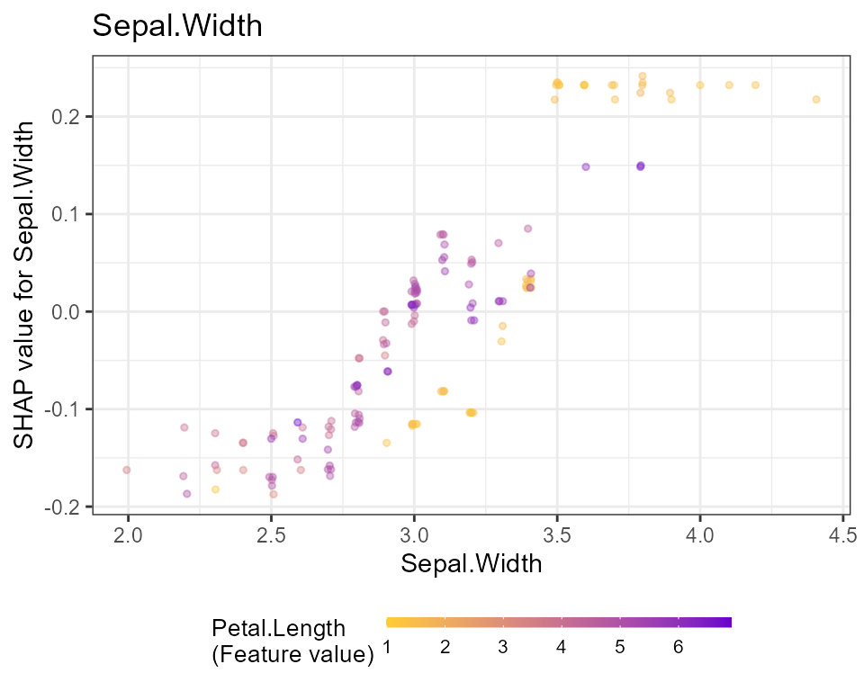
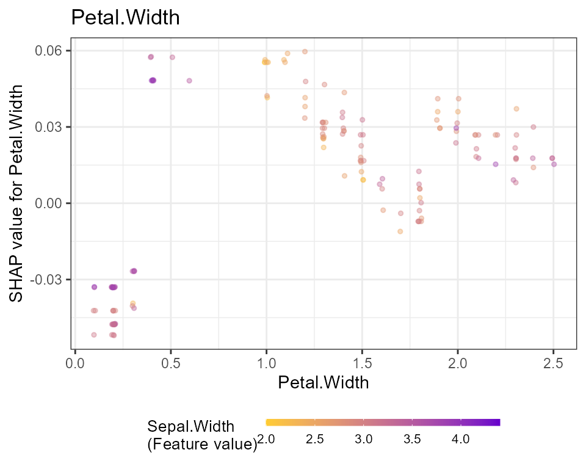
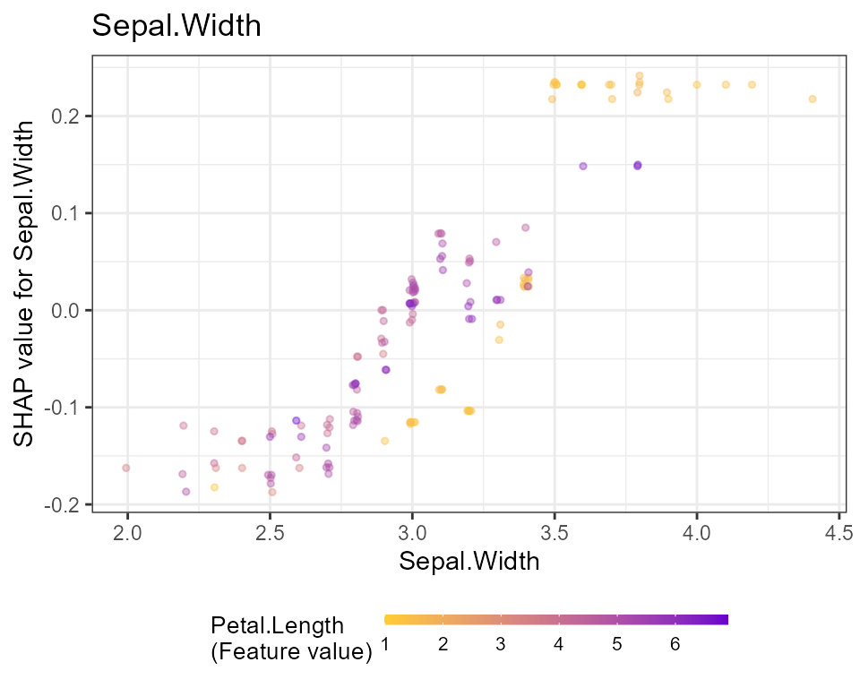
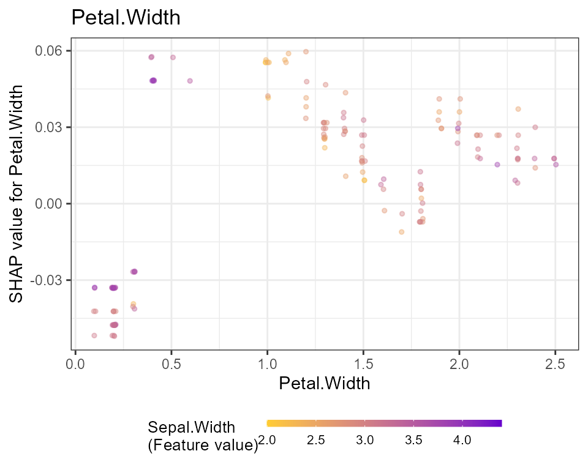

Using SHAPforxgboost with LightGBM
Source:vignettes/basic_workflow_using_lightgbm.Rmd
basic_workflow_using_lightgbm.RmdIntroduction
This vignette shows how to use SHAPforxgboost for interpretation of models trained with LightGBM, a hightly efficient gradient boosting implementation (Ke et al. 2017).
Training the model
Let’s train a small model to predict the first column in the iris data set, namely Sepal.Length.
head(iris)
#> Sepal.Length Sepal.Width Petal.Length Petal.Width Species
#> 1 5.1 3.5 1.4 0.2 setosa
#> 2 4.9 3.0 1.4 0.2 setosa
#> 3 4.7 3.2 1.3 0.2 setosa
#> 4 4.6 3.1 1.5 0.2 setosa
#> 5 5.0 3.6 1.4 0.2 setosa
#> 6 5.4 3.9 1.7 0.4 setosa
X <- data.matrix(iris[, -1])
fit <- lgb.train(
params = list(objective = "regression"),
data = lgb.Dataset(X, label = iris[[1]]),
nrounds = 50,
verbose = -2
)SHAP analysis
Now, we can prepare the SHAP values and analyze the results. All this in just very few lines of code!
# Crunch SHAP values
shap <- shap.prep(fit, X_train = X)
# SHAP importance plot
shap.plot.summary(shap)
# Dependence plots in decreasing order of importance
for (x in shap.importance(shap, names_only = TRUE)) {
p <- shap.plot.dependence(
shap,
x = x,
color_feature = "auto",
smooth = FALSE,
jitter_width = 0.01,
alpha = 0.4
) +
ggtitle(x)
print(p)
} 

Note: print is required only in the context of using ggplot in rmarkdown and for loop.